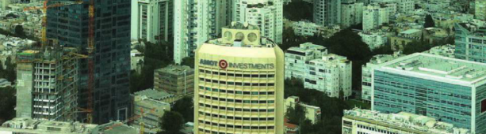

“The City as the Center of the World,” the most recent issue of the Panim journal of the Israel Teachers' Association, was edited by MCLN faculty member Dr. Itzhak (Kiki) Aharonovich and Rubik Rosenthal. The contents - articles by leading writers in the areas of cities, urbanization and urbanism in Israel - deal with the nature of urban life, the ecological and cultural aspects of the city, and the urban space as the locus for expressions of education, justice,and aesthetics. The issue examines several aspects of the city, urbanization and urbanism and asks questions such as: What is urban life? How is the modern city built? What makes the towns of the periphery unique and what mistakes were made when they were established? Two articles address specific urban categories: development towns and Arab towns.
In his introduction, “Cities: Life, Death, and Triumph,” Aharonovich surveys two of the most important books on urbanization: Jane Jacob’s The Death and Life of Great American Cities, written in the 1960s and still considered to be the bible of urban life; and Triumph of the City, published two years ago by Edward Glaeser, who states unequivocally that city life is the optimum lifestyle for the human race. “What makes the city so unique is that it facilitates multiple encounters among a large number of people, encounters whose purpose is to exchange ideas, opinions, and thoughts and to laugh a little and gossip - because that’s what people do,” writes Aharonovich. Aharonovich goes on to survey the other 12 articles, which provide multiple points of view and novel insights about cities, the urban phenomenon and the urban lifestyle created in the city.
The contributors include two members of Mandel Center for Leadership in the Negev faculty, Israel Sorek and Dr. Shani Bar-On. In his article, “A Non-alienating City,” Sorek attempts to debunk three common myths on cities: (1) cities are more crowded than rural areas, (2) they are noisier, and (3) they are more alienating. In fact, “people exchange one type of noise for another: the drone of cars for the crashing of waves, the movement of people for the wind blowing through the trees,” writes Sorek.
“The Conditions of Urbanization,” by Shani Bar-On, surveys the causes of the urbanization process in the West over the past few centuries, and in this country in the last hundred years, especially since the establishment of the State of Israel. Bar-On’s main assertion is that until Israel’s founding, urbanization was primarily voluntary; afterwards, in sovereign Israel, it was in part compulsory, a result of the generative power of building a state.
{kind=link}